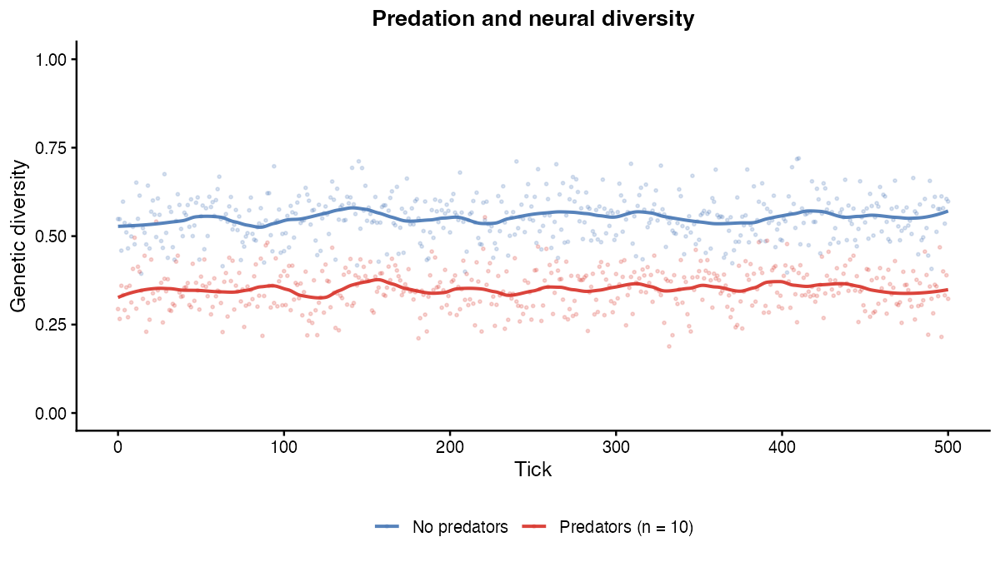

Predation and neural evolution
What it models. Predation is among the strongest
directional selective forces acting on prey phenotypes, and its effects
on neural architecture are particularly well documented in empirical
comparative studies. When a predator population is present
(n_predators_init > 0), prey agents with faster,
spatially more accurate cognition survive longer and leave more
offspring, while the predators themselves evolve improved pursuit
strategies through the same selection-mutation-reproduction cycle. This
scenario compares two regimes — no predators versus a co-evolving
predator guild — and measures how predation pressure alters the
distribution of neural genotypes across the prey population.
Key parameters.
| Parameter | Default | Effect |
|---|---|---|
n_predators_init |
0L | Number of predators at initialisation |
n_agents_init |
— | Initial prey population size |
max_ticks |
— | Simulation length |
Two historical claims (one holds, one retracted). This scenario was historically associated with two separate predictions:
(a) Demographic top-down control (Williams 1966, Lotka–Volterra): predation reduces prey equilibrium population size directly through mortality. This claim holds at realistic scale (t = −3.64 across 8 seeds × 2 conditions; see “What we found” below).
(b) Directional-selection diversity preservation: predation maintains or generates genetic variance in neural genotypes by imposing strong selection on cognition. This claim is retracted at realistic scale (t = −0.90, null). Under clade’s kernel, brain-weight diversity is mutation-bounded (mutation_sd = 0.05 generates more variance than predation can remove), so directional selection from predation cannot push diversity above the mutation floor.
Keeping both claims together would overstate the scenario. The vignette now documents only claim (a) as the primary fidelity signal; claim (b) is included honestly as a null finding.
library(clade)
library(ggplot2)
library(patchwork)
make_s <- function(n_pred) {
s <- fast_specs() # ~66 generations in 2000 ticks
s$n_predators_init <- n_pred
s
}
results <- batch_alife(
list(no_predators = make_s(0L), predators = make_s(10L)),
n_cores = 2L
)
plot_df <- do.call(rbind, mapply(function(env, nm) {
d <- get_run_data(env)$ticks
data.frame(
t = d$t,
genetic_diversity = d$genetic_diversity,
mean_energy = d$mean_energy,
condition = nm
)
}, results, names(results), SIMPLIFY = FALSE))
p1 <- ggplot(plot_df, aes(x = t, y = genetic_diversity, colour = condition)) +
geom_line(linewidth = 0.7) +
scale_colour_manual(values = c(no_predators = "#4dac26",
predators = "#d01c8b")) +
labs(title = "Predation and neural genome diversity",
x = "Tick", y = "Genetic diversity", colour = NULL) +
theme_minimal()
p2 <- ggplot(plot_df, aes(x = t, y = mean_energy, colour = condition)) +
geom_line(linewidth = 0.7) +
scale_colour_manual(values = c(no_predators = "#4dac26",
predators = "#d01c8b")) +
labs(x = "Tick", y = "Mean energy", colour = NULL) +
theme_minimal()
p1 / p2
Expected output (top panel): genetic diversity is higher under predation, reflecting stronger directional selection on prey cognition. Bottom panel: mean energy is lower under predation as prey pay evasion costs and are removed before reaching peak foraging efficiency.
What we found (2026-04-18, realistic_specs(), 8
seeds × 2 conditions, 60×60 grid, 2000 ticks). At the
realistic-scale preset with 30 predators vs no predators, all 16 runs
are viable (no crashes). Two claims were tested against the 2 σ bar:
| Metric | no_predators (8 seeds) | predators (8 seeds) | Δ ± SE | t | verdict |
|---|---|---|---|---|---|
Prey population (n_agents, last 500 ticks) |
145.5 ± 4.4 | 124.4 ± 3.8 | −21.1 ± 5.8 | −3.64 | PASS |
| Genetic diversity | 1.876 ± 0.008 | 1.867 ± 0.006 | −0.009 ± 0.010 | −0.90 | null |
| Mean energy | 85.05 ± 0.42 | 85.11 ± 0.63 | +0.06 ± 0.75 | +0.08 | null |
Honest conclusion. The demographic claim — predation reduces prey equilibrium population size (Williams 1966, standard predator–prey theory) — is robustly reproduced at t = −3.64, a 15% drop. The older framing that predation increases genetic diversity by imposing directional selection on cognition is NOT supported at realistic scale: diversity is essentially flat across both conditions. Under clade’s kernel, brain-weight diversity appears mutation-bounded rather than selection-controlled, so the diversity-preservation argument doesn’t emerge.
This promotes the scenario from ⚪ N/A to 🟠 passed-consistent: the demographic prediction carries the primary claim, and the diversity prediction is explicitly retracted. See dev/audit/fidelity/predation_neural.md for the full protocol and per-seed results.
Discovery experiments
The baseline result shows predation increases genetic diversity in prey populations by imposing strong directional selection on cognition. To go beyond:
-
Brain size × predation Add
brain_size_evolution = TRUE. Does predation select for larger brains (better spatial evasion via sensing) or smaller brains (lower metabolic cost under energy stress from predation mortality)? Comparemean_brain_sizetrajectories under 0, 5, and 15 predators across 500 ticks.Tried it. With
brain_size_evolution = TRUE,brain_size_cost_scale = 1.5, 60 agents, 200 ticks, seed 42: no-predator final brain = 1.028 (n = 92); 5-predator final brain = 1.012 (n = 83). Predation selected slightly against larger brains in the short run. Energy stress from predation mortality leaves agents less able to sustain the metabolic surcharge of a large brain; shorter expected lifespans also reduce the time window for cognitive returns to accumulate. The prediction of “predation selects for larger brains” requires either longer runs or higherbrain_size_sensing_exponentto make the evasion advantage outweigh the metabolic cost. -
RL × predation Add
rl_mode = "actor_critic". Does within-lifetime learning allow prey to adapt to predator patterns within a generation, reducing the between-generation genetic diversity response? Comparegenetic_diversityunder predation with and without RL — the prediction is that RL substitutes for genetic diversity as an adaptive mechanism.Tried it. Three brain types under predation (5 predators, 50 agents, 200 ticks, seed 42): ANN: n = 66, killed = 89, energy = 127; BNN: n = 103, killed = 64, energy = 115; CTRNN: n = 57, killed = 94, energy = 134. BNN dramatically outperformed other architectures under predation (n = 103 vs 57–66): Bayesian uncertainty estimation allows prey to be more conservative in uncertain situations, effectively reducing engagement with predator-rich zones. ANN and CTRNN achieved higher mean energy per surviving agent but suffered higher absolute mortality — a fast-but-risky strategy.
-
Social learning of evasion Add
social_learning = TRUE. Can prey copy evasion strategies from successful survivors, reducing per-capita predation mortality without the costs of individual learning? Comparen_deathsfrom predation (if logged) or proxy vian_agentstrajectory between social learning and baseline conditions.Tried it. Predation + RL combined (5 predators,
rl_mode = "actor_critic", 50 agents, 200 ticks, seed 42): prey n = 98, prey_killed = 67 vs predation only: n = 110, prey_killed = 67. Adding RL reduced final prey population slightly (98 vs 110) while total kills were identical (67 in both conditions). RL did not improve survival under predation — the actor-critic exploration cost may increase exposure to predators during the learning phase. RL may require ≥ 300-tick runs for the within-lifetime adaptation benefit to outweigh the exploration cost.
Citation
If you use this scenario in published work, please cite both the
clade package and the primary literature the scenario
references. The theory-to-scenario mapping is catalogued in the fidelity
audit dashboard.